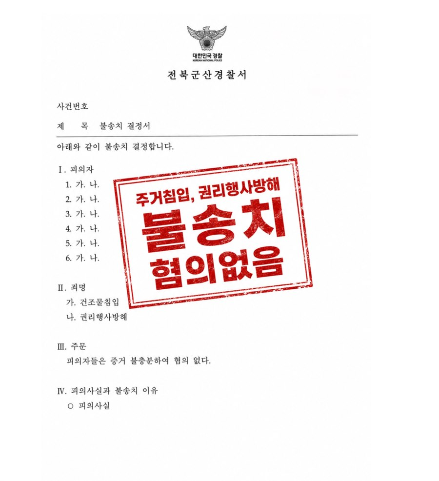
형사 · 군형사
건조물침입 · 권리행사방해
기업 간 사업장 인수 과정에서 발생한 사안으로, 고소인이 실질적 점유를 하고 있지 않았던 점과 건조물침입 또는 권리행사방해의 고의가 없었던 점을 적극 변소했습니다.
결과 경찰 불송치
Results

기업 간 사업장 인수 과정에서 발생한 사안으로, 고소인이 실질적 점유를 하고 있지 않았던 점과 건조물침입 또는 권리행사방해의 고의가 없었던 점을 적극 변소했습니다.
결과 경찰 불송치
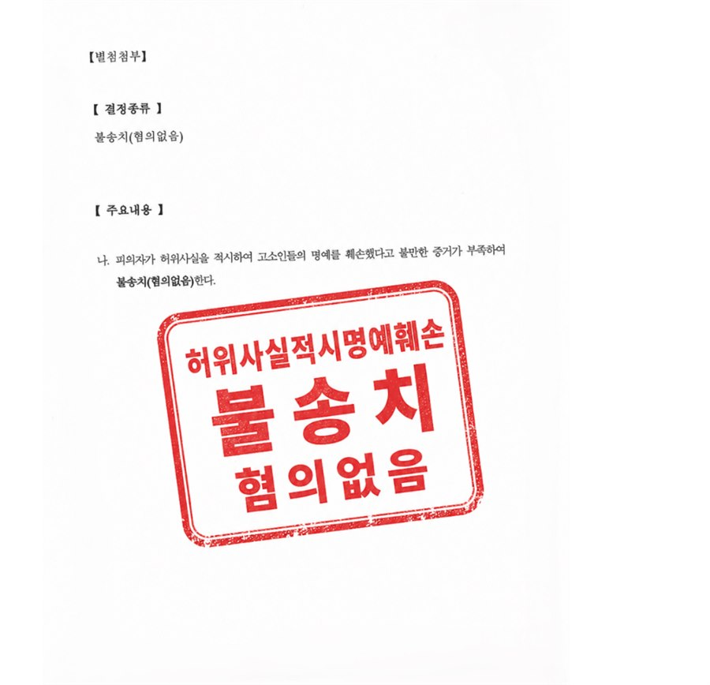
평소 알고 지내던 고소인과 사이가 틀어져 다른 지인에게 울분을 토한 것을, 고소인이 허위사실 유포로 고소한 사안입니다. 해당 발언이 사실의 적시가 아닌 단순 의견표명에 불과한 점, 허위 사실이 아니라는 점을 적극 변소했습니다.
결과 경찰 불송치
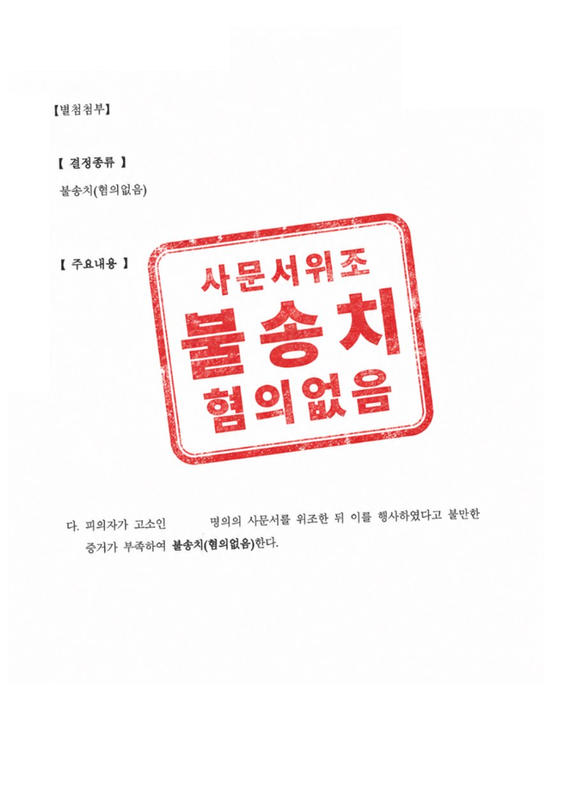
동업 과정에서 고소인과 불화가 생긴 뒤, 그 과정에서 작성한 업무 관련 문서를 두고 고소인이 사문서위조 및 동행사죄로 고소한 사안입니다. 해당 문서에 고소인이 직접 날인한 것이 분명함을 적극 입증해 변소했습니다.
결과 경찰 불송치
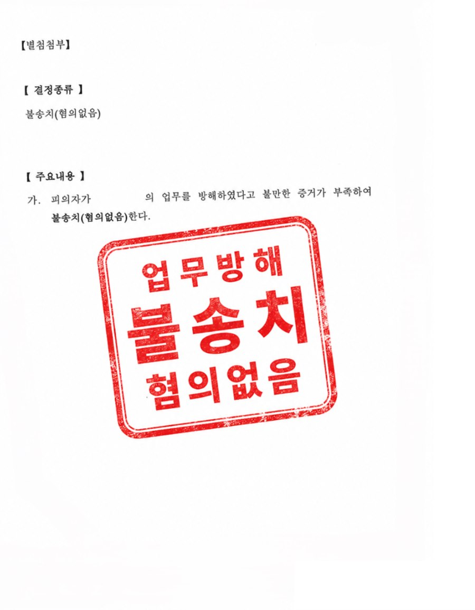
고소인이 동업 관계에서 탈퇴한 뒤, 의뢰인이 거래처와 대화하며 그 경위를 설명한 부분이 허위라며 업무방해로 고소한 사안입니다. 발언이 허위사실 유포나 위계·위력에 해당하지 않는 점, 업무방해의 위험을 초래하지 않은 점, 고의가 없었던 점을 적극 변소했습니다.
결과 경찰 불송치
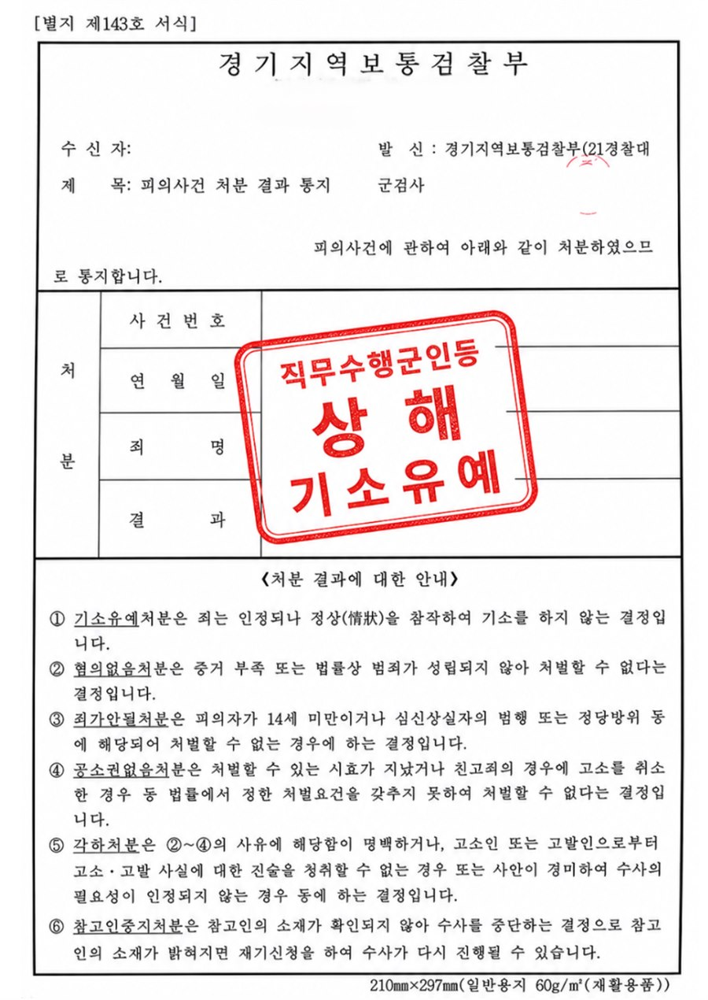
현역 군인이 부대 안에서 동료 장병을 폭행해 직무수행군인등 상해로 고소된 사안입니다. ‘직무 수행 중’이 아니었던 점을 들어 군형법이 아닌 형법상 상해가 적용되어야 한다는 점과, 신속히 피해자와 합의를 마친 점을 군검찰에 적극 변소했습니다.
결과 기소유예
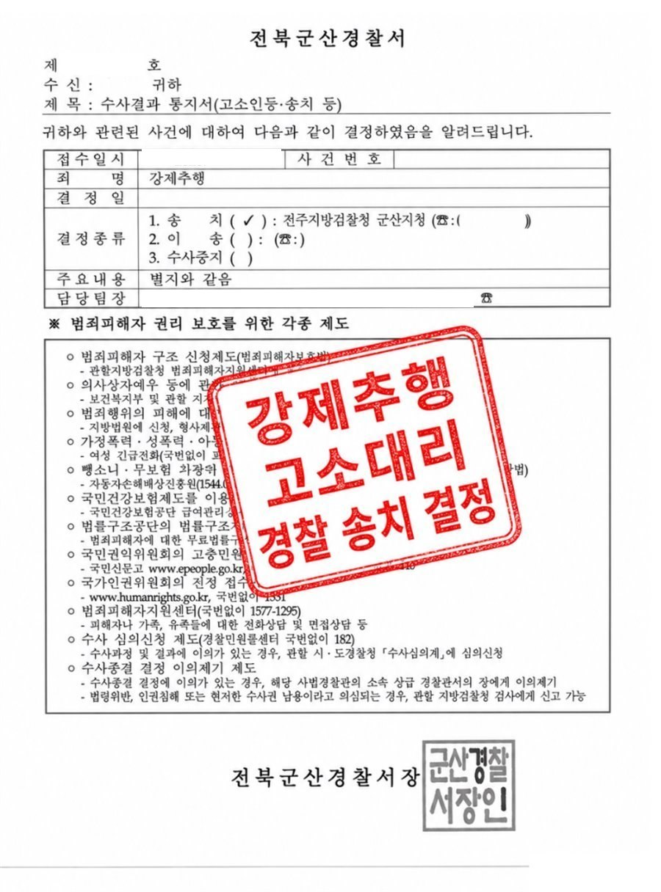
직장 내에서 발생한 강제추행 사안으로, 피해자를 대리해 고소했습니다. 기습적으로 이루어져 즉각적인 반항이 어려웠던 점, 위계질서로 인해 적극적인 거부가 제한되었던 점을 적극 개진했습니다.
결과 검찰 송치 결정
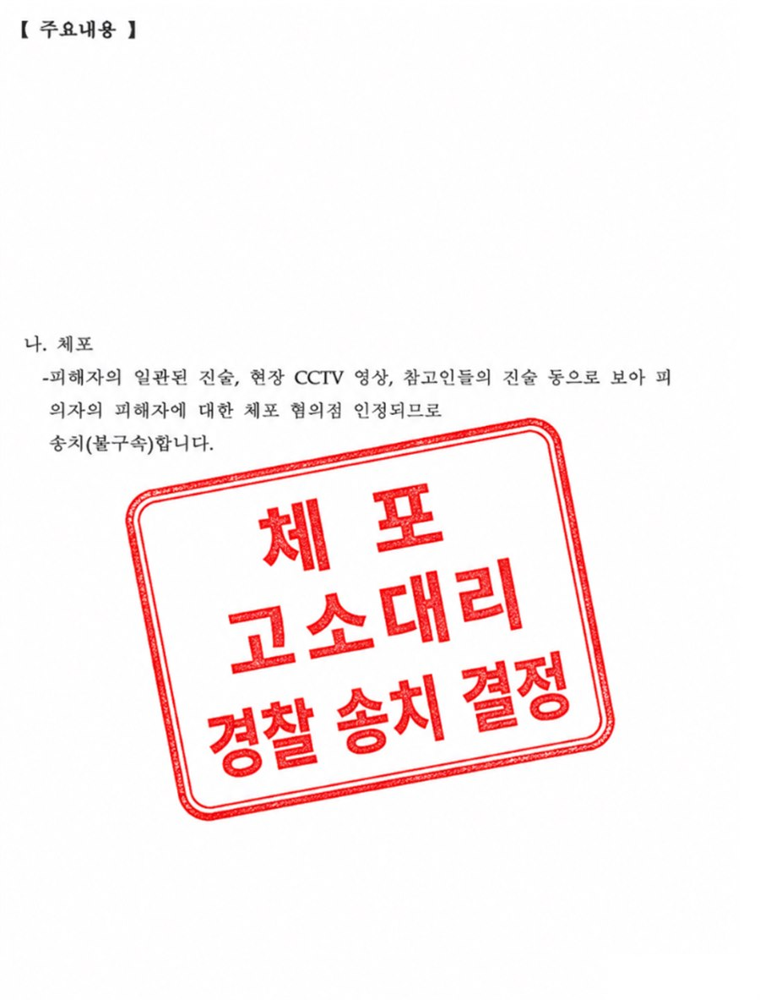
술자리를 마치고 귀가하던 중 지인과 다툼이 생겼고, 상대방이 자신의 집에서 의뢰인을 나가지 못하게 한 사안입니다. 피해자를 대리해, 이동을 제한한 행위가 ‘체포’에 해당하는 점과 의뢰인의 의사에 명백히 반한 점을 적극 개진했습니다.
결과 검찰 송치 결정
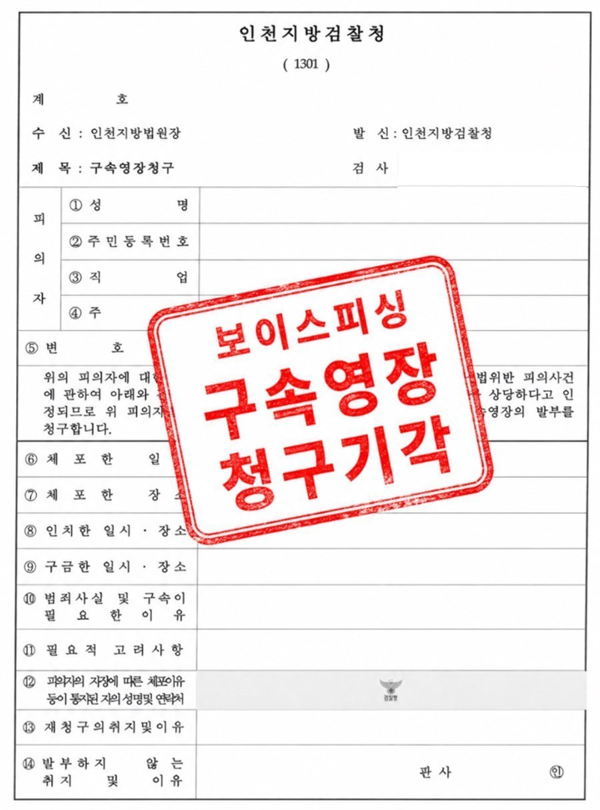
인터넷 고액 아르바이트 게시글을 보고 성명불상자의 지시에 따랐을 뿐인데, 보이스피싱 용의자로 긴급체포되어 구속영장이 청구된 사안입니다. 보이스피싱 범죄에 연루된 사실을 전혀 인식하지 못했던 점을 적극 변소했습니다.
결과 구속영장 기각
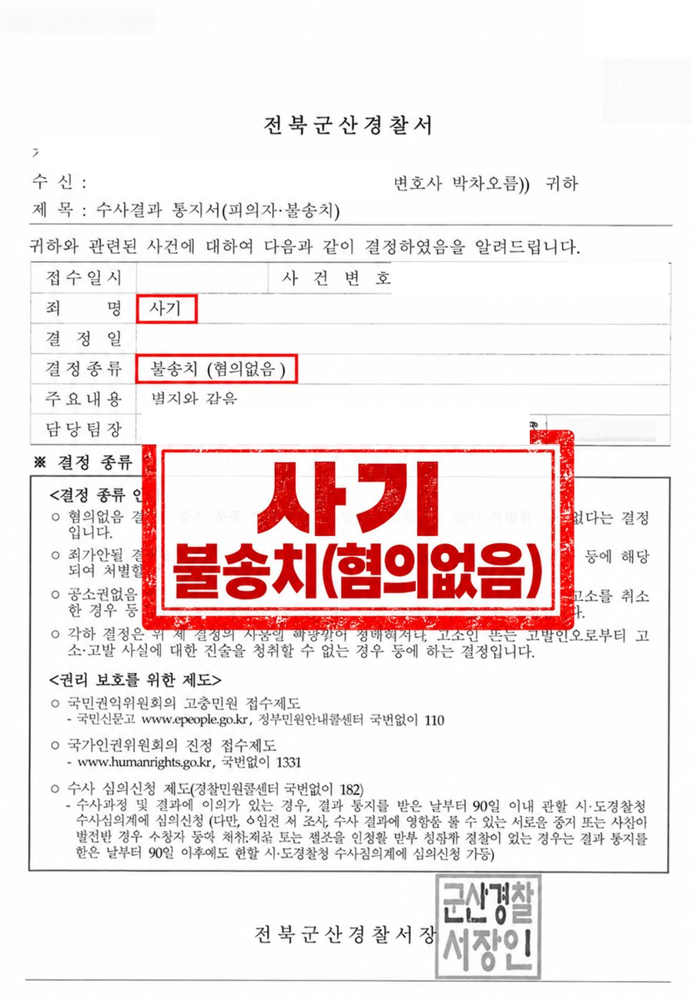
연인 사이에 수년간 금전거래가 있었는데, 결별한 뒤 상대방이 의뢰인을 사기로 고소한 사안입니다. 기망행위가 존재하지 않았던 점, 편취의 고의가 없었던 점을 적극 변소했습니다.
결과 경찰 불송치
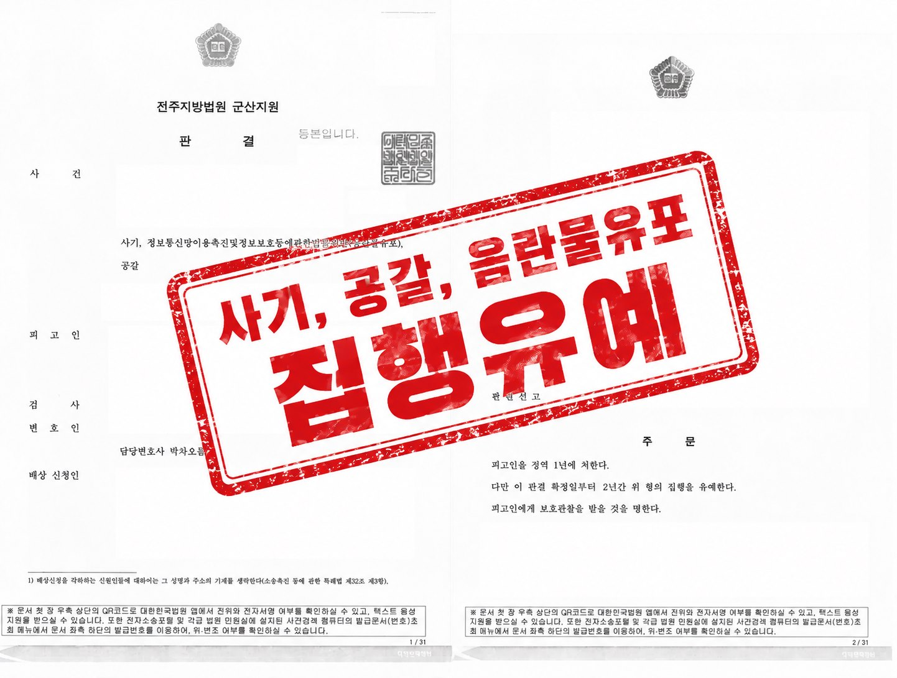
음란물을 유포·판매한 뒤 추가 구매를 원하는 상대에게 금전을 요구하는 과정에서 협박 등이 있었던 사안입니다. 혐의를 인정하고, 약 100명에 이르는 피해자와 신속하게 합의를 진행하여 피해 회복에 힘썼습니다.
결과 집행유예
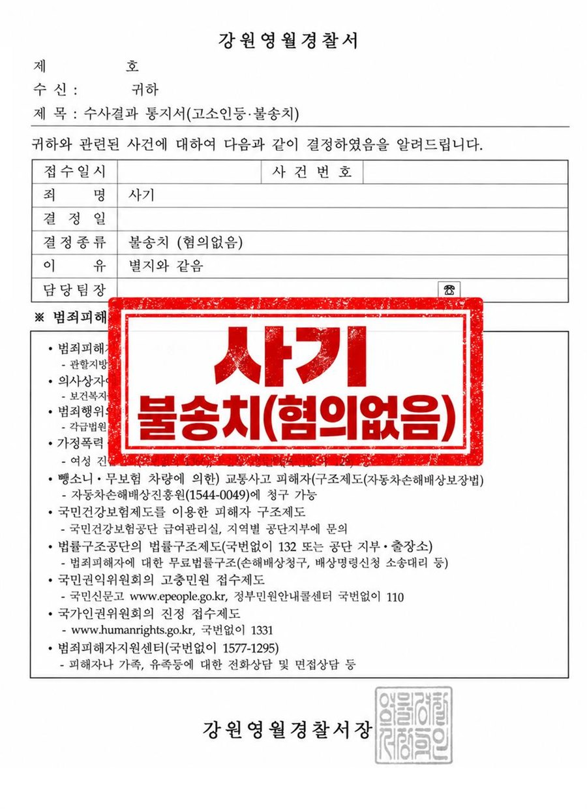
유흥주점 업주로부터 선불금을 지급받고 갚지 못한 사안입니다. 기망행위가 없었던 점, 편취의 고의가 없었던 점을 적극 변소했습니다.
결과 경찰 불송치
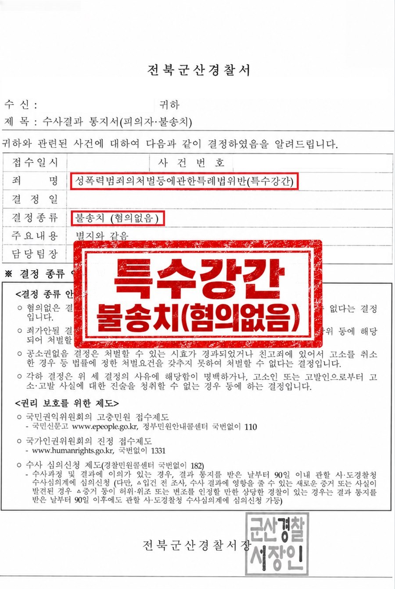
평소 알고 지내던 상대방, 지인과 함께 숙박업소에 머무르게 되었는데, 그 과정에서 있었던 성관계를 두고 상대방이 의뢰인을 특수강간으로 고소한 사안입니다. 성관계가 동의하에 이루어진 점, 폭행이나 협박이 전혀 없었던 점, 상대방 주장에 신빙성이 없는 점을 적극 입증하여 변소했습니다.
결과 경찰 불송치
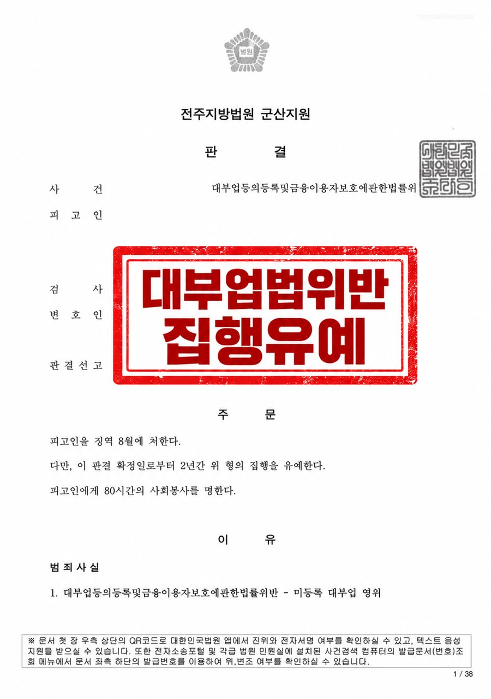
등록을 하지 않은 채 대부업을 영위하여 기소된 사안입니다. 다수의 피해자와 신속하게 합의를 진행하고, 유리한 양형사유를 적극 변소했습니다.
결과 집행유예